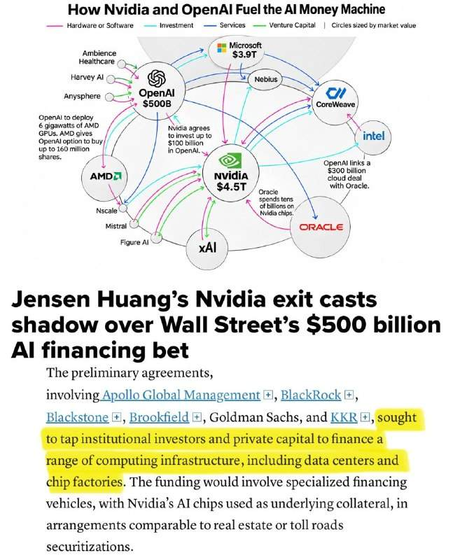
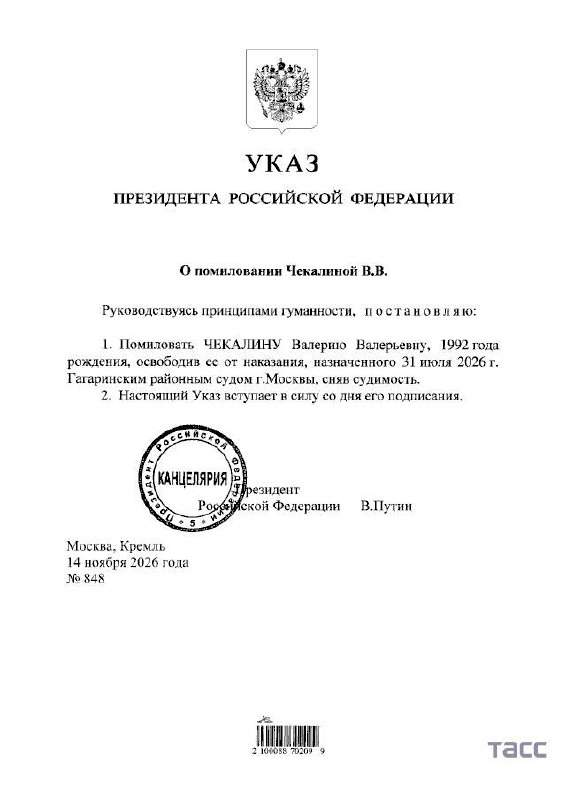
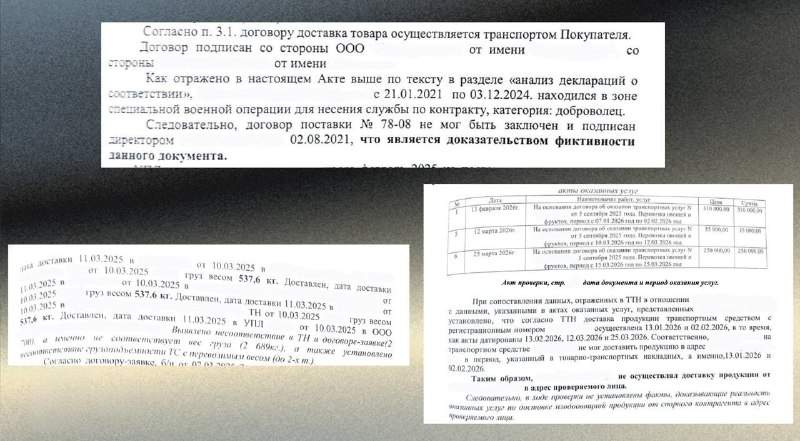
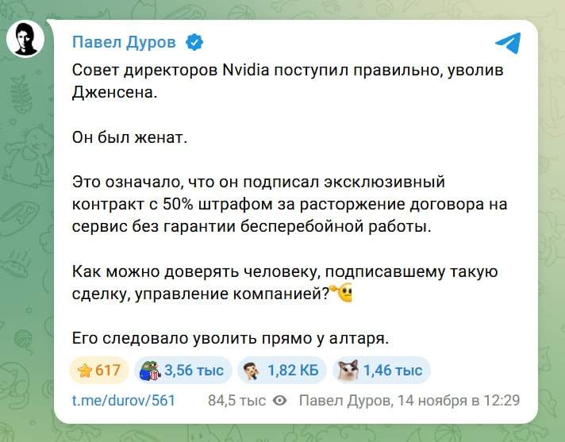
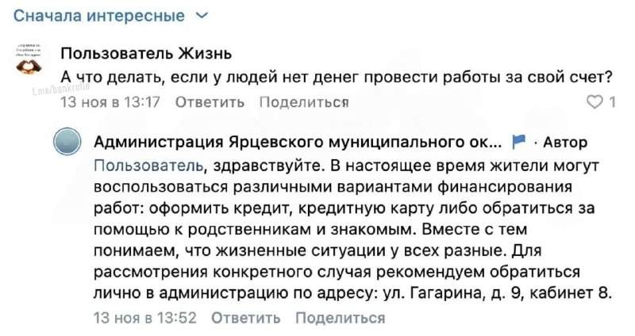
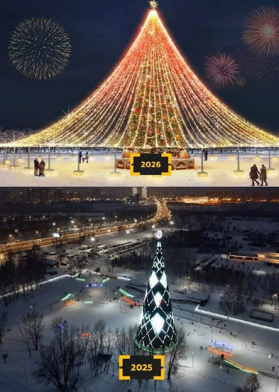

Вся гражданская авиация США полностью парализована из-за проблем с частотами в национальной системе воздушного пространства, сообщили в Федеральном управлении гражданской авиации Штатов. Вылеты запрещены из всех аэропортов страны. @bankrollo
Вся гражданская авиация США полностью парализована из-за проблем с частотами в национальной системе воздушного пространства, сообщили в Федеральном управлении гражданской авиации Штатов. Вылеты запрещены из всех аэропортов страны. @bankrollo

Nvidia оказалась в центре огромного финансового скандала, способного взорвать весь ИИ-пузырь в США. Как пишет WSJ, финансовая отчётность компании показывает, что Дженсен Хуанг загнал организацию в такой кризис, что выход из него может грозить ликвидацией Nvidia. Всему виной бизнес-схема с ИИ-стартапами. Nvidia давала им миллиардные кредитные гарантии, а они на эти деньги строили дата-центры и закупали чипы. Если компания не могла реализовать мощности, Nvidia обещала выкупать их, лишь бы стартапы продолжали покупать их чипы. В результате Nvidia выступала и инвестором, и кредитором, и поставщиком, и резервным покупателем одновременно. Это помогало набить компании цену. Однако всё закончилось, когда крупнейшие ИИ-организации не стали переходить на собственные чипы, несмотря на то, что Nvidia подписала жесткие контракты с поставщиками и обязалась выкупить у них комплектующие на $279 млрд. Совокупные обязательства превысили $530 млрд, это в разы больше годовой чистой прибыли за несколько лет. В любой момент эти контракты могут обернуться неподъемными долгами. Прекращение схемы обернется банкротством всех зависящих от Nvidia стартапов и компаний, не говоря уже о том, что акции самой организации и всего американского бигтеха обвалятся. @bankrollo
Встреча Путина, Трампа и Си Цзиньпина состоится в четверг. Лидеры России, США и Китая на полях саммита АТЭС могут обсудить новое соглашение о контроле над ядерными вооружениями. @bankrollo

Путин помиловал Лерчек и освободил её от наказания по делу о выводе более 250 млн рублей в ОАЭ. В марте рассмотрение дела приостанавливали, когда у Валерии Чекалиной обнаружили онкологическое заболевание, а домашний арест заменили запретом определённых действий. Суд дал ей 5 лет условно и назначил штраф более 760 млн рублей, после чего блогер попросила Путина о помиловании. @bankrollo
BMW отзовёт более 720 тысяч машин из-за риска возгорания. Отзывная кампания пройдёт в США. Авто 2012–2018 годов выпуска, включая BMW 2-й, 3-й, 4-й и 5-й серий, X1, X3, X4, X5 xDrive40e, Z4 и 328xi Gran Turismo, могут загореться на стоянке с выключенным двигателем, сообщили в Национальном управлении безопасности дорожного движения США. В ведомстве посоветовали владельцам таких авто не парковать их вблизи зданий и других машин, пока их не починят. @bankrollo
Аномально тёплая погода накроет Москву с 16 ноября, сообщили в Гидрометцентре. В этот день воздух прогреется до +6 °С. @bankrollo
ЦБ не будет снижать ключевую ставку до февраля 2027 года — глава РСПП Шохин. @bankrollo

ФНС едва не обанкротила «Светофор» из-за ИИ, пишут Осторожно, новости. К примеру, налоговики заявили, что поставщик не мог подписать договор в 2021 году, поскольку уже ушёл добровольцем на СВО, которая началась только в 2022-м. В общей сложности компании насчитали 147 млн рублей недоимки, но в акте обнаружили почти 400 ошибок. Юристы сообщают о похожих случаях ещё в шести регионах. @bankrollo

Хуанга стоило уволить прямо на свадебной церемонии — Дуров. Основатель Telegram удивился, как такому человеку вообще доверили управление компанией. По его словам, глава Nvidia подписал контракт со штрафом в размере 50% за расторжение без каких-либо гарантий бесперебойной работы сервиса. @bankrollo
Российские компании начнут массовые сокращения работников в 2027 году, прогнозирует глава РСПП Шохин. По его словам, многие компании, которые сохраняли численность работников, переходя на трёхдневку и четырёхдневку, начнут проводить сокращения. В следующем году рост ВВП может составить 0,5%, отметил он. @bankrollo

В Смоленске чиновники посоветовали пострадавшим от атак БПЛА брать кредиты на ремонт или занимать деньги у знакомых и родственников. @bankrollo
Болгария прекращает финансовую и военную помощь Украине — премьер-министр страны Радев. @bankrollo

Самую дорогую новогоднюю ёлку в России за 91 млн рублей установят в Красноярске. 30-метровую искусственную ёлку поставят на острове Татышев, пишет Shot. Вокруг неё возведут гигантский светящийся шатёр, на который уйдёт 9 км светодиодных нитей. Прошлогоднюю 55-метровую ёлку красноярцы прозвали «уродским конусом». А на торжественном открытии после праздничного отсчёта ёлка просто не зажглась. @bankrollo
МГУ закрыли на карантин из-за вспышки кори в нескольких корпусах. @bankrollo https://t.me/bankrollo/69802 РГГУ закрывают на карантин из-за кори вслед за МГУ. Студентов ИИНТБ переводят на дистанционку до 28 ноября. @bankrollo
Прямые рейсы на вьетнамский остров Фукуок открыли из Москвы, сообщили в аэропорту Шереметьево. Рейсы будут выполняться четыре раза в неделю, продолжительность полёта составит 9 часов 45 минут. Первый рейс уже отправился с полной загрузкой. @bankrollo
Путин встретится с Трампом и Си Цзиньпином 19 ноября в Шэньчжэне — Песков. Первая встреча трёх лидеров произойдёт на саммите АТЭС. @bankrollo
Жёсткие бои с полицией, пожары и массовые беспорядки снова охватили Францию. Тысячи людей в Бордо, Марселе, Париже и других городах громят улицы из-за роста цен на жизнь, бюджетной политики Макрона и милитаризации экономики. Протесты во Франции идут уже два месяца, они начались с восстания школьников из-за большого количества уроков. @bankrollo
Запретить йогу в России потребовали в РПЦ. По словам протоиерея Фомина, восточные практики вредны для россиян из-за связи с чуждыми духовными учениями. @bankrollo